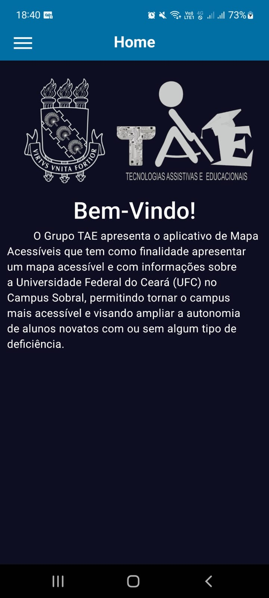
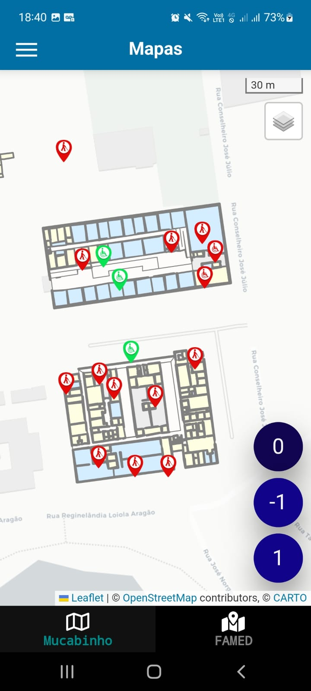
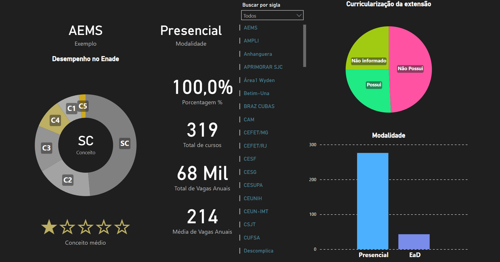
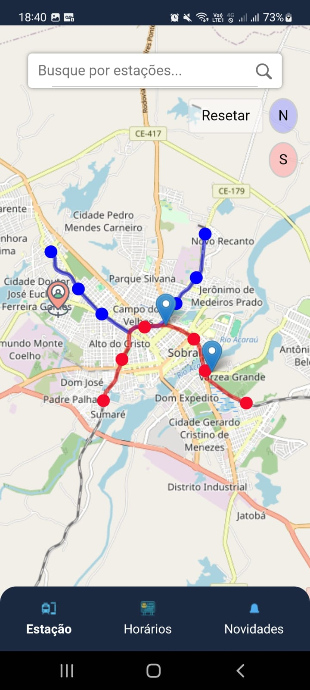

Projetos
-
Mapa Acessível do Campus Sobral da UFC (Remunerado)


- Disponibilidade de um mapa do campus Sobral através de um APP com informações
úteis para ingressantes, como localização das salas e laboratórios. Fui bolsista BIA e
tive contato com React Native e expo.
-
Análise de dados do curso de Engenharia de Computação (Remunerado)

- Fui bolsista BIA e tive contato com PowerBI.
-
(Por conta própria)

- Projeto feito com amigos sobre um APP capaz de monitorar os VLTs de Sobral em
tempo real e disponibilizar as localizações no mapa. Utilizamos React Native, Expo,
OpenStreetMap e Firebase.
- Github